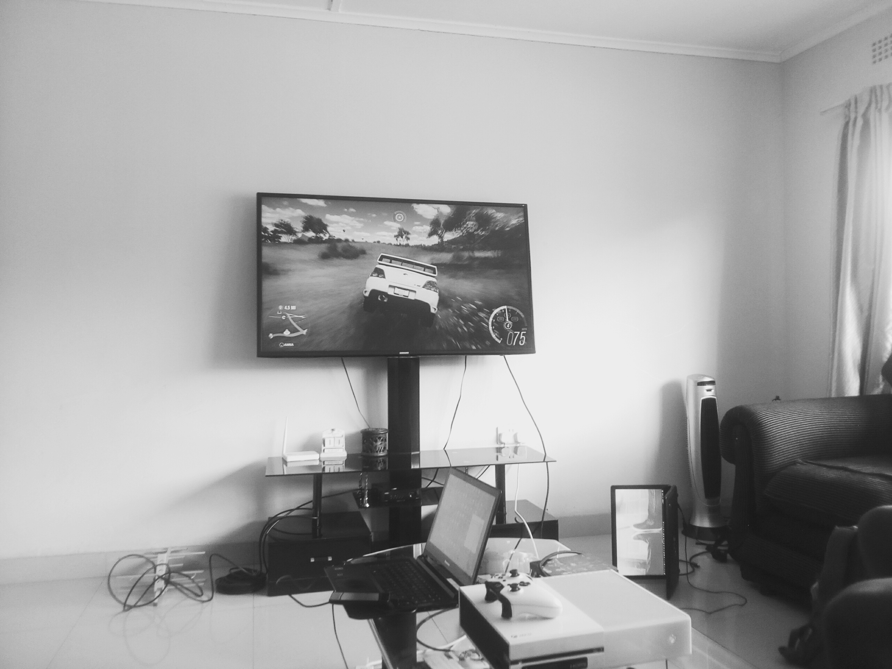

Walking on the bridge to Unza
Then the bridge was empty

Love this scene from above
I will know that each activity will involve calculations. No two bridges are the same. Positive and negative aspects of the pert. Provides a tool for prdicting resource needs. But you know everything you need will be given to you. Its mainly for a one off project only. You might not get time prediction correctly. There wont be any use for the situation. Why dont you use percentages through out this site. I think it would be a good idea. You guys. Program evaluation and review technique.